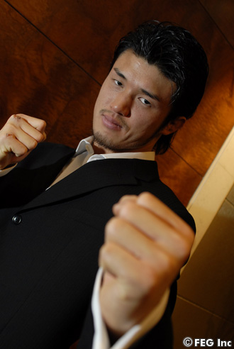
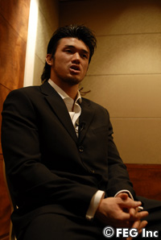
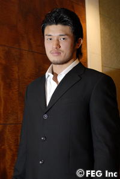

前田日明スーパーバイザーと船木誠勝との代理戦争としても注目を集めている、山本宜久VS柴田勝頼。『OLYMPIA HERO'S 2007開幕戦～名古屋初上陸～』（3月12日、名古屋市総合体育館レインボーホール）で実現するこの対決は、今年のHERO'Sを占う重要な試合になるかもしれない。船木氏の英才教育を受けている柴田が、山本戦でいかに闘うのだろうか。
■HERO'Sで闘うのは必然
――まさかの参戦となりますね。
柴田 いや、必然です。このリングに上がることは偶然ではなく、必然だと思いますね。船木誠勝さんと練習を始めて、振り返ってみれば、なるべくしてなったんだと思います。前田日明さんもいますから。
――違和感はない？
柴田 ひじょうにワクワクしていますね。楽しみですよ。
――船木さんと前田さんの代理戦争とも言われていますが。
柴田 僕としては、相手は誰でもいいんですよ。試合をしたいという気持ちの方が強いですからね。
――船木さんとの練習はいつから？
柴田 1年半前からです。
――どういった形で練習をしているのですか。
柴田 マンツーマンで練習をやってきて、いろんな人間とスパーリングをするようになって、アドバイスをもらいながら練習しています。練習としては最高の環境にいると思います。これ以上の贅沢はないです。
――船木さんを独占している？
柴田 はい。今回、試合をするとなって船木さんがセコンドにつくということが。今までは信頼関係だけでやって来ていたんですけど、1つの仕事としてできるようになった形ですね。自分が、船木さんの会社所属の選手ということになりましたから。
――それは最近のことですね。
柴田 ええ。ここ1週間はドタバタでした。急展開でしたからね。所属は、俺だけ。だから負けられないですね。
――船木さんとは毎日、練習を。
柴田 ええ。毎日、ほとんど。食事からヨガからウェイトから、すべてにおいてですね。
――船木さんが現役の頃にやっていたことを柴田選手が。
柴田 船木さんが遠回りしてやってきた、一番、いい方法を教えてもらっている形です。
――とくに重点的にやっていることは。
柴田 すべてにおいてです。寝技も含めて。
■武蔵や天田とも対戦経験あり
――柴田選手といえば、K-1との関わりも深いですね。天田ヒロミ選手、武蔵選手と闘ってみてどうでしたか。
柴田 武蔵選手と天田選手ではルールが違って、土俵が違うってことなんですけど、闘うということに関しては、基本的に何も変わらないと思います。闘うという意志が一番、大切なんだなと練習していて気付きました。
――それはレスリングの頃から？
柴田 そうですね。そうありたかったです。そうありたいですね（笑）。プロレスラーとして。闘う姿勢が一番、大事だと思います。
――HERO'Sで見せたいものは何ですか？
柴田 今までやってきた練習です。今までは使えない部分があったと思うんです。刀を渡されて、毎日、一生懸命に研ぐんですけど、いつ使うんだろうという状態でした。今、使うときが来ましたね。刀を振り回したいです。あまり大きいこと言うとアレなんですけど…（笑）。
――対戦相手の山本宜久選手に対してのイメージは？
柴田 とくにないですね。闘えればなんでもいいです。基本的に下の名前も読めないんで（笑）…申し訳ないですけど。思いっきりぶつけたいですね。ぶつけます。ぶつけて、今の自分を表現できたらいいと思います。
――今後の展開は。
柴田 まずは試合をしてからじゃないですかね。そこで自分にどれほどの価値があるのかで、今後が決まってしまうわけですから。両立というか、こっちに出ていて、ひょこひょことプロレスに出たりとかは…、そこまで器用じゃないと思うんで。一つに集中したいですね。
――今度の試合をしてから決断すると。
柴田 もう気持ちは固まっています。
――HERO'Sで？
柴田 ガッツリ行きたいですね。
■今年は不言実行でいきたい
――体重は、どのくらいありますか。
柴田 87kgくらいですね。丁度、良いくらいのクラスがあったので、たまたま（笑）。じつは、最近まで105kgあったんですけど。
――絞ったわけですね。
柴田 絞れましたね。自然と。
――それは船木さんとの食生活で？
柴田 そうです。トレーニングと食生活ですね。
――ちなみにレスリングのときは、体重はどのくらいあったのですか。
柴田 でも、レスリングをしていたのは高校生のときですから。それからムリヤリ食って、新弟子のときに増やした体重だったんで、ムダな肉が多かったんです。削ぎ落としましたよ。
――では、今がベスト体重ですか。
柴田 今は支障もなく、動きやすいですね。90kgくらいまで持っていって、そこから落とすという形にしたいです。肉体改造って、延々と続くと思います。いまだに船木さんもやっているみたいですから。永遠のテーマですね。
――今後、何を目指すのでしょうか。
柴田 自分のなかで"これだ"というのは漠然としてはないですね。ハッキリと言えるほどのものはないんですけど、こうしたいという気持ちはつねに持っています。それに向かって練習してきました。今は人に言うものでもないし、言えるものでもないです。へんに期待させてしまっても…。今年は不言実行で行こうと思っていたんですけど、できる限り喋らないで（笑）。
■フラストレーションが溜まっている
――その体重ですと、今年もライトヘビー級トーナメントが予定されています。ベルトへの興味はありますか。
柴田 ベルトが欲しいという気持ちよりも、まだ1試合もしていないので。試合をしてからどんどん、良い意味での欲が出てくると思うんですよ。とにかく今は、リングに上がりたいという気持ちだけですね。
――ただ“闘いたい”と。
柴田 はい、今まで溜まっていたものを爆発させたいですね。
――武器を持っているにも関わらず、使えない状態はいかがでしたか。
柴田 使えない状態というか、試合も少なかったですからね、昨年、一昨年と。逆に練習する時間がすごくありました。
――刀を研いでいて、フラストレーションが溜まる感じでしょうか。
柴田 溜まっていましたね。だから、楽しみです。
――これからどうなるのでしょう？
柴田 どうなるんでしょうね（笑）。1度しかない人生ですから。今やらなかったら、いつやるんだろうと思っていますよ。気持ちとしては、今回がデビュー戦ですね。
――今までは助走なのですね。
柴田 総合格闘技のリングへ上がることに関しては、デビュー戦です。
――プロレスとは違う？
柴田 自分の人生では一本で繋がっているんですけど、今回は総合でのデビューですね。
――十分な準備は整っていますか。
柴田 勝つ気がないとか、負けることを考えていたらここにはいませんよ。
――試合が終わったあと、どうなっているのでしょうか。
柴田 良いイメージしか今のところは湧いていないですね。
――何だか、とても楽しそうに見えますね。
柴田 長いトンネルから、やっと抜け出た感じなんですよ。光が見えました。ここ2週間くらいの話ですね。2月はとくに走り抜けました。
――今までを思い出すのでは。
柴田 それも全部、経験なんで。それも全部ぶつけて行こうと思います。
■桜庭、カシンとも闘いたい
――HERO'Sのイメージは？
柴田 前田さんがいて、船木さんが解説していましたし、総合のリングで1番、最初に考えたのがHERO'Sでした。
――俺の舞台だと。
柴田 それは勝ってから言えって感じですけどね（笑）。いろんな人が出ていて、個性的な選手が多いじゃないですか。闘ってみたい選手もいますし。
――誰ですか？
柴田 桜庭和志さんだったり、ケンドー・カシン（＝石澤常光）だったりですね（笑）。自分が誰と闘っても面白いんじゃないかなと思えますね、今は。でも、誰でもいいんですよ、相手なんて。
――面白くなる確信があると。
柴田 ありますね。プロですから。
――柴田選手のプロフェッショナル論というのは。
柴田 プロ意識が大事だと思うんですよ。それがなかったらアマチュアになってしまうわけですし、でも勝敗は抜きでとは言えないじゃないですか。勝たなければいけない闘いですしね。そこは最大の魅力だと思いますね。それで勝った人間が、HEROになれると思います。
――それは勝ち方、闘い方、生き様ですか？
柴田 すべて重要だと思いますよ。生き方が見えないと、つまらないじゃないですか。
――プロレスをやっていて、それを強く感じるわけですか。
柴田 プロレスを経験して総合に出る選手と、プロレスを経験しないで総合に出る選手とではちょっと違うと思うんです。逆もそうなんですけど…。自分のなかにはプロレスラーは強いっていう憧れ、夢があったんでプロレスに入ったんです。ルーツがそこなんで、強くなりたいという意識がプロレス入門に繋がっていたんです。強くなりたいと思って今、ここにいます。
――桜庭選手はプロレスラーの強さを見せた選手の一人です。彼に対しては、どんな印象がありますか。
柴田 直接、会ったことがないんです。でも俺は、あんまり選手同士で仲良くはしたくないんですよね。まぁHERO'Sに参加している選手とは接点ないんですけど。
――桜庭選手と闘ったら、どうなるでしょう。
柴田 それは分からないですよ。
――勝敗はともかく、イメージは？
柴田 まだ分からないですね。やりたいという気持ちはあるけど、それよりも決まっている、目の前の試合が大事ですから。
――どうなるか予想できないと。
柴田 できないですね。できないから、面白いんじゃないですか？ 予想ができちゃう試合なんてつまんないですよ。
■気持ちとプロ意識は負けない
――ここは絶対に負けないという部分はどこですか？
柴田 気持ちと意識です。
――意識とは。
柴田 プロとしての意識です。プロレスラーであり、その前にファイターでなきゃいけないと思うんです。人間である前にプロレスラーでなくてはいけないとも思いますし。プロと名乗る以上は、それなりの試合をするべきだと思います。
――前田さんに対するイメージは？
柴田 久々に会えて嬉しかったです。
――相手は前田さんが可愛がっている選手です。複雑ですね。
柴田 そんなことないですよ。山本選手に対しては、好きでもないですし、親しくもないですから。
――前田さんに何を見てもらいたいですか。
柴田 普通に闘いです。ありのままだと思うんですよ。リングに上がってしまえば、ウソはつけないですしね。ありのままを見せたいです。
――最後にファンに向かって一言、お願いします。
柴田 何を言えばいいんですか（笑）。デビュー戦でこんなに喋る奴、いますかね？
――期待値が高いですから。
柴田 何て言えばいいんだろ…。何もないですよ。
――ずっと応援しているファンに向かってでもいいですよ。
柴田 そういう人たちは、頑張りますとか聞きたくないんじゃないですかね。
――前田さんに対してでもいいです。
柴田 …。こういうのが一番、苦手ですね（苦笑）。
――プロレスラーなので、何かアピールがあると思ったんですけど。
柴田 それが嫌なんですよ（笑）。プロレスラーらしくないんですよ、俺。ステレオタイプというか、古いんですよ、そういうの。ブッ殺すぞって言っても、殺されないじゃないですか（笑）。
――武蔵戦のときに乱闘を起こしたじゃないですか!!
柴田 ああ、あれから俺、成長したんですよ（笑）。■
» 『OLYMPIA HERO'S 2007 開幕戦 〜名古屋初上陸〜』実施概要
» 柴田勝頼：プロフィール
|
 |

プロレスラー・柴田勝頼が、3月12日、HERO'Sデビュー！
 |
| HERO'Sでは「桜庭さんやケンドー・カシン（石澤）選手」に興味を惹かれると語る柴田 |
 |
| 山本宜久戦では持ち前の喧嘩ファイトが炸裂するか? バチバチな展開に期待しよう! |
|